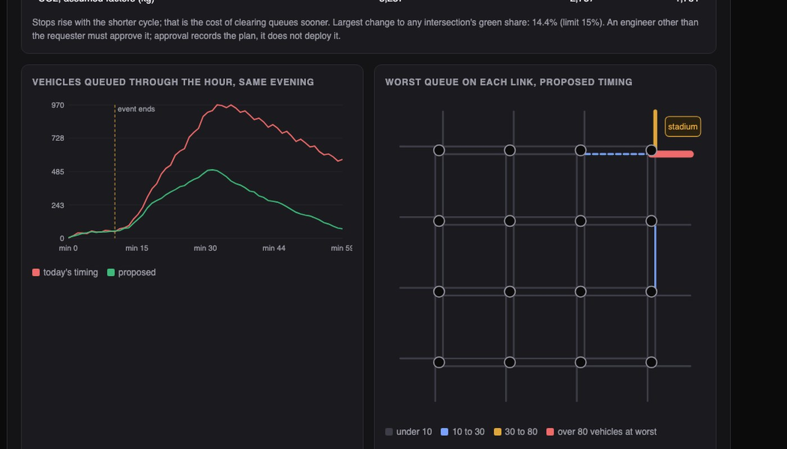
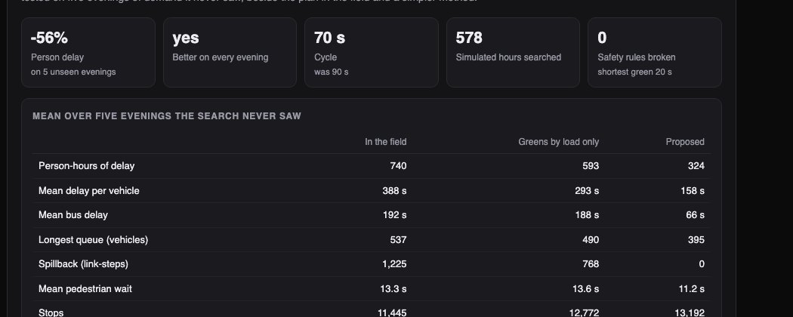

Python · Simulation · Smart cities · 2026-10
Can Better Signal Timing Empty a Stadium Faster?
A digital twin of 16 traffic signals in an invented city. With a stadium emptying and a lane shut, a search over 578 simulated evenings found a timing plan that cut delay by 56% in the model without ever shortening a pedestrian crossing. It cannot touch a real signal: it files a proposal, and a second person has to approve it.

Built from a written blueprint as one vertical slice. The city and its traffic are simulated by a simple queue model that I wrote, far cruder than a real street: no lane changing, no driver behaviour. Every result means "better in this model", not a forecast for a real junction. Emissions use assumed factors. Not built: a real road network, reinforcement learning, any connection to signal controllers (on purpose), Kafka, Terraform, single sign-on.
01 — The problem
When a stadium empties, the signals around it keep running the plan written for an ordinary evening. Queues block the junctions behind them, buses are stuck in the same jam, and the fix is usually found months later in a study. Can a model of the network test a better timing plan before anyone touches a signal, and do it without quietly taking the time away from people crossing the road?
Blueprint 8 of ten in a second build book, built as its demo scenario end to end.
02 — What I built
A Python service on PostgreSQL with a background worker and a web page of maps, started by one docker compose up.
- A traffic simulator: queues, green lights, and jams that spill back into the junction behind.
- A live picture: the queue on every road, estimated from imperfect detectors.
- An optimiser that searches for better timing inside fixed safety rules.
- Evidence: every proposal tested on evenings the search never saw.
- Approval: a second person decides; the system only exports the plan.
03 — How it was built
- 01
Simulate an hour in 25 milliseconds
Every five seconds, each road releases waiting vehicles if its light is green and the road ahead has room. If the road ahead is full, nothing moves and the queue grows backwards into the previous junction. That one rule produces the gridlock that matters at a stadium. Being this simple makes the model fast enough to run hundreds of times, which is what a search needs.
out = np.minimum(q, net["sat"] * green) ratio = np.where(want > room, room / np.maximum(want, 1e-9), 1.0) - 02
Know what is on the road
Detectors miscount by a few percent, and one queue reading in ten never arrives. Counting cars in and out drifts further from the truth every minute; the queue readings are noisy. A filter on each road combines the two, trusting the counts less the more traffic has passed. Its error was 4.3 vehicles, against 5.9 for readings alone and 16.7 for counts alone.
k = p / (p + QUEUE_NOISE ** 2) x, p = x + k * (z - x), (1 - k) * p - 03
Make safety a wall, not a price
The cheapest way to cut car delay is to give the busy road a long green and leave people crossing it a few seconds. So pedestrian time is not something the optimiser can trade away: no green may be shorter than 19 seconds (time to walk a 14-metre crossing), and no plan may differ too far from the one in use. A plan that breaks a rule is refused with the rule named.
if g < MIN_GREEN or ew < MIN_GREEN: out.append(f"intersection {n}: a green of {min(g, ew)} s is shorter than the {MIN_GREEN} s a pedestrian needs to cross") - 04
Search, then test on evenings it never saw
The optimiser nudges one junction's green time or start time, keeps the change if the simulated evening improves, and repeats a few hundred times for three cycle lengths. Because a plan can simply memorise the two evenings it was tuned on, the result is scored on five different ones, next to today's plan and a simpler textbook method.
if s < cur: plan, cur = trial, s - 05
Propose, never apply
The result is a proposal. The person who requested it cannot approve it; that rule is enforced in the program and again inside the database. Approval writes a new version of the plan for each junction, marked "approved, not deployed", for an engineer to export. There is no code path to a signal controller.
CHECK (decided_by IS NULL OR decided_by <> created_by)
04 — Results
The stadium evening, on five test evenings the search never saw:

| Today | Proposed | |
|---|---|---|
| Delay per vehicle | 388 s | 158 s |
| Bus delay | 192 s | 66 s |
| Junctions blocked | 1,225 | 0 |
| Pedestrian wait | 13.3 s | 11.2 s |
| Stops | 11,445 | 13,192 |
"Junctions blocked" counts five-second steps in which a full road ahead held a queue back. Stops went up: the shorter cycle clears queues sooner but stops each car more often.
Two honest findings. The gain is this large because "today's plan" in my model is a poor one (equal greens, no coordination); a real city's plan would already be tuned. And when I ran the stadium plan on an ordinary evening expecting it to do badly, it still beat today's plan, which confirmed that most of the gain is not about the event at all.
Checks. 39 tests, including: vehicles are conserved, queues never exceed the road, the optimiser only returns safe plans, a resent detector reading cannot move an estimate twice, and one city cannot see or decide another's plans.
05 — What I'd do next
- A real network and a proper microsimulator (SUMO), with the model checked against real counts first.
- A realistic starting plan, so the gain is measured against something an engineer already tuned.
- Proper signal-timing standards for clearance intervals, not just a minimum green.